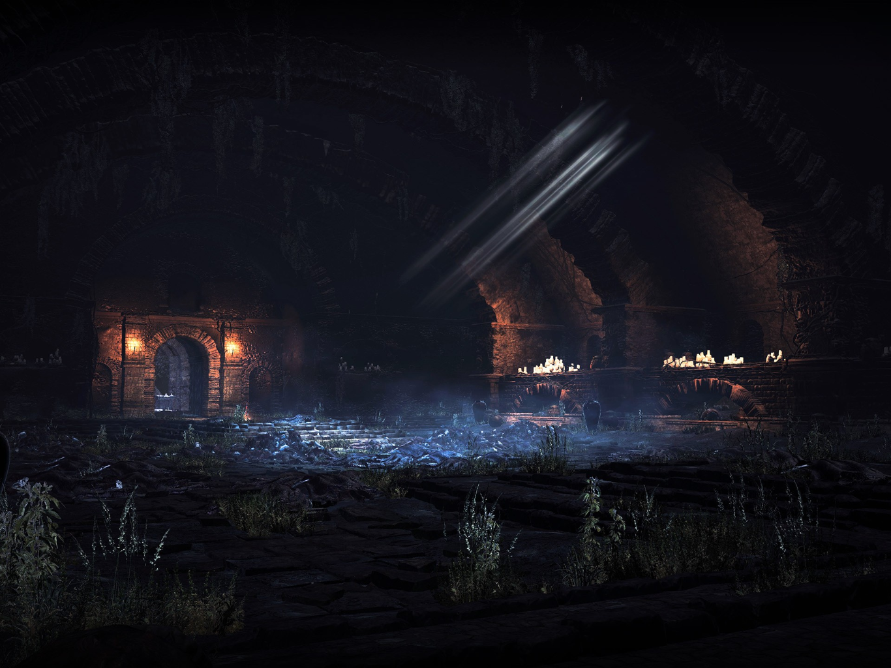
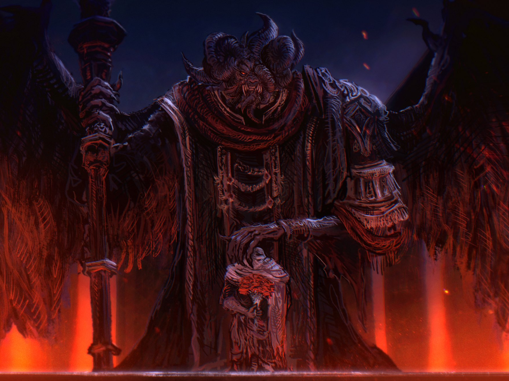
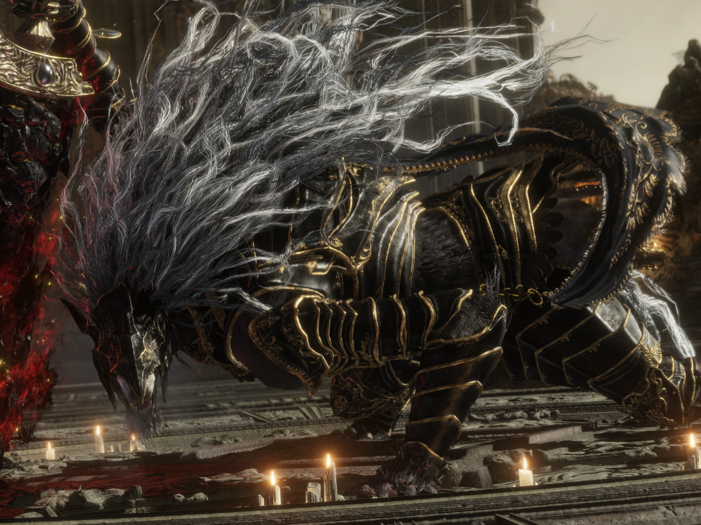

Warriors of Anorlondo
"Only in truth, the Lords will abandon their thrones, and the Unkindled will rise.
Nameless accursed undead, unfit even to be cinder. And so it is that ash seeketh embers..."
Eygon of Carim
You can find Eygon of Carim in the Undead Settlement near the lift that leads to your first encounter with Siegward and the arrow-shooting giant.
Sirris of the Sunless Realms
Talk to her at Firelink Shrine to receive a Blessed Mail Breaker and the Silvercat Ring.
Anri of Astora
You can find Anri sitting near the Halfway Fortress bonfire in the Road of Sacrifices.
Enemies
“Your mind will serve you better than any trinket under the suns...It
is a weapon...and like any weapon, you need practice to be any good at wielding it.”
,Choose yours Carefully

The Penetrator

Volnier

Soul of Cinder
Sights of the lands between
The Lands Between are a vast domain ruled by Queen Marika the Eternal and the setting of Elden Ring

Higher Class Residancy
Lothirc once Ruled By king Ociris--------------------

Pesantry Class Residancy
Vasel State of the land of Lothric--------------------

Higher Class Residancy
The city locked awaya by the world--------------------
Words of varrey
"I've seen your kind, time and time again. Every fleeing man must be caught. Every secret must be unearthed.
Such is the conceit of the self-proclaimed seeker of truth. But in the end,
you lack the stomach. For the agony you'll bring upon yourself..." Meld your Testimonies

Welcome Tarnished to Our new Dinasty
MOGWIN

Those who walk along flame are destined to me meed Death
MALIKETH